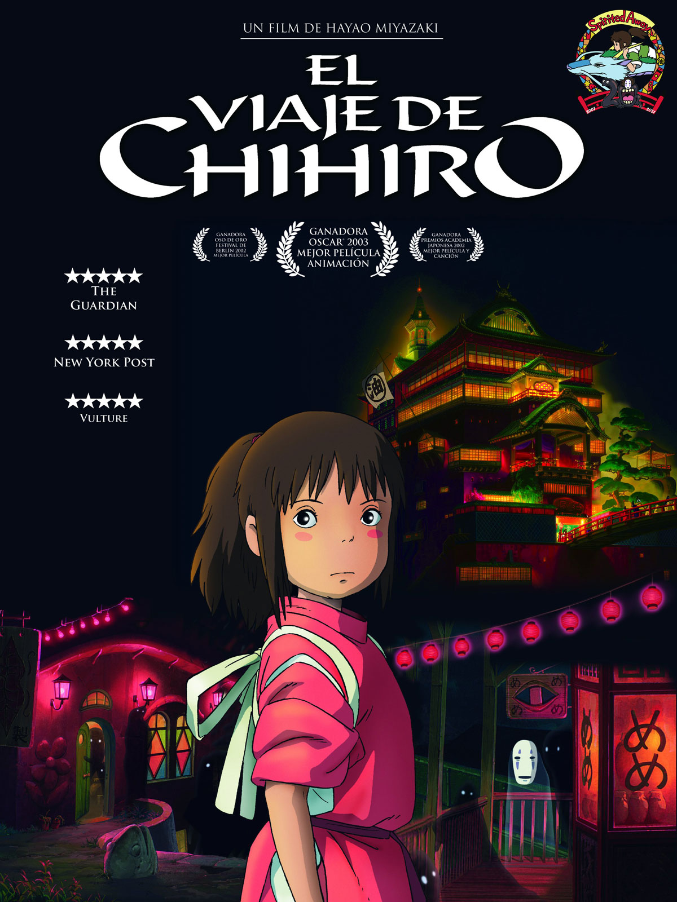

el viaje de chihiro

Sinopsis:
En rumbo a su casa nueva, Chihiro, una niña caprichosa y nerviosa investiga con su familia un parque de diversiones abandonado. Al comer de un banquete magnifico, sus papas son transformados en cerdos. Lo que parecía ser un parque es un balneario para dioses antiguos, espíritus y seres mágicos, operado por la hechicera Yubaba. Chihiro tendrá que demostrar su valor como empleada para poder librar a su familia del hechizo antes de que sean cocinados para los clientes de Yubaba.